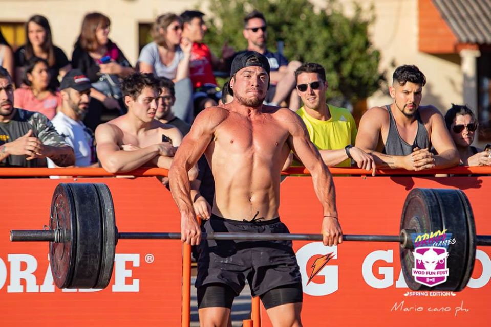

CURRICULUM VITAE
Esteban Alejandro Castro Patricio


DATOS PERSONALES
Fecha de Nacimiento: 7 de Junio 1996
DNI/CUIL: 20-39621707-5
Edad: 23 Años
Estado Civil: Soltero
Dirección: La coruña 1514 dpto 4
Barrio: Crisol sur
Ciudad: Córdoba
Teléfono Celular: (0351) 153- 398855
E – mail: tebacasstro@gmail.com
Disponibilidad horaria: Part time
Movilidad: Moto-Bici
OBJETIVOS
Ofrecer toda mi energía, compromiso, voluntad, actitud, atención y experiencia.
Brindar en cada clase nuevos aprendizajes.
Eliminar las frases "no puedo" "no me sale" haciendoles ver lo contrario.
Seguir aprendiendo y capacitandome.
Dar el ejemplo entrenando, mejorando y compitiendo.
Que cada clase sea mejor que la anterior y seguir agrandando la familia crossfitera.
ESTUDIOS CURSADOS
Primario: Completo. Escuela Jordán Maldonado. Salsipuedes, Córdoba
Secundario: Completo. Secundario Isada. Córdoba. (Economía-Administración)
Cursos/Seminarios
-5 años entrenando y dando clases de Crossfit
- Curso de Preparación deportiva de alto rendimiento - IPEF CLUB JUNIOR.
- Curso X FIT nivel 1 y nivel 2 - Pablo Pizzurno - Curso teórico y práctico “
-STETSIUK WEIGHTLIFTING COURSE LEVEL 1
- Seminario de TRAINING CAMP - BRIXBOX ATALAYA
- Conferencia “IDEAS MILLONARIAS” Juan Diego Gómez
EXPERIENCIA LABORAL
“LEMON” (Boulevar Illia 480). Desde el 12/15 – 07/17. ENCARGADO de Verdulería “Lemon”
Descripción de Tareas:
-Gestionar y supervisar que se mantenga la calidad del servicio prometido por la organización
-Asistencia y contacto permanente con el cliente
-Compra y control de mercadería
-Cobro a clientes y manejo de la caja
-Repositor
Referencia laboral: Gabriel Alejandro Rosas- Jefe de sucursal. CEL: 0351-155 226417
SABA Fitness (Carlos tejedor 2080) Desde el 3/17 al 7/18 Box de Crossfit. COACH DE CROSSFIT
Descripción de Tareas:
-Dar clases de CrossFit
-Programar
-Cobrar al cliente y cargar en el sistema.
-Ordenar y limpiar
Referencia laboral: SABA Fitness: Tomás Redoni - CEL: 0351-153059467
HitCross (Juan B. Justo 4621- planta alta) desde el 12/17 - actualidad. Centro Deportivo. COACH DE CROSSFIT
Descripción de Tareas
-Dar clases de CrossFit
-Programar
Referencia laboral: Mauricio Raúl Orellana, Jefe de HitCross. CEL: 0351- 157 018396
Nation (Catamarca 1240) Desde Enero 2019- actualidad. Deporte y recreación. Coach de Crossfit
Descripción de tareas:
-Dar clases de Crossfit
-Programar
-Cubrir otras clases (funcional, musculaci+on)
Referencia labpral: Giselle- CEL: 3512243714